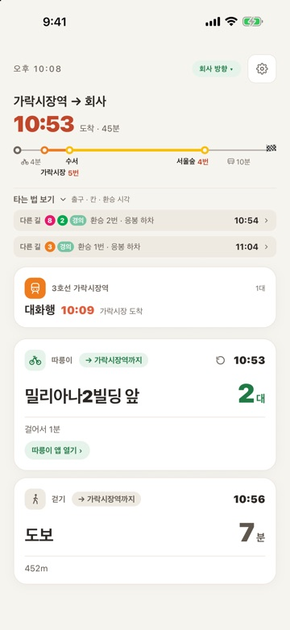
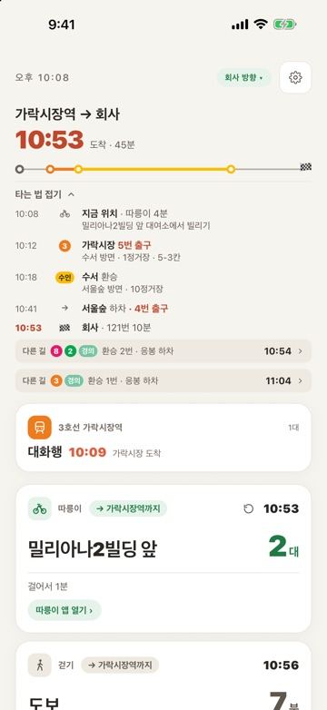

고르는 건 사람, 앱은 숫자만
뭐타지는 "이걸 타세요"라고 하지 않습니다. 비가 오는지, 짐이 있는지, 오늘 걷고 싶은지는 앱이 모르니까요. 대신 지금 위치에서 가능한 길을 카드로 놓고, 카드마다 오른쪽 위에 도착 예정 시각을 적습니다. 가장 빠른 길이 무엇인지는 숫자가 말해 주고, 고르는 건 사람이 합니다.
화면 보는 법


- 맨 윗줄 — 지하철을 탈 역과 그 뒤 길을 보여 줍니다. 어디서 갈아타는지, 내려서 따릉이 · 버스 중 무엇을 타는지까지요.
- 카드 — 직행 버스 · 버스 · 버스 환승 · 따릉이 · 걷기. 오른쪽 위 시각이 목적지에 닿는 시각입니다.
- 지도 — 카드를 누르면 타는 곳까지 걷는 길이 나옵니다. 지도를 누르면 크게 보이고, 두 손가락으로 확대할 수 있습니다.
처음에 할 일은 하나 — 집과 회사
설정에서 집과 회사를 등록합니다. 상호명이나 주소로 찾아도 되고, 그 자리에 서서 「지금 서 있는 자리」로 잡아도 됩니다.
그다음부터는 방향을 고를 필요가 없습니다.
- 집 근처에 있으면 회사 방향으로 보여 줍니다.
- 회사 근처에 있고 오후면 집 방향으로 바뀝니다.
- 다른 곳에 갈 때는 오른쪽 위 「회사 방향 ▾」를 눌러 집 · 회사 · 저장해 둔 다른 목적지로 바꿉니다.
숫자는 어디서 오나
버스 도착과 따릉이 대여소의 남은 자전거, 지하철 도착은 서울시와 공공데이터포털의 실시간 정보입니다. 다만 타고 가는 시간과 갈아탈 버스를 기다리는 시간은 거리와 배차 간격으로 어림한 값입니다. 그래서 도착 시각은 "대략 이쯤"으로 봐 주세요. 길이 막히는 날에는 버스 쪽이 더 늦어질 수 있습니다.
서울에서 씁니다
따릉이와 서울 버스 정보를 쓰기 때문에 서울에서 출퇴근하는 분께 맞는 앱입니다. 가입과 광고가 없고, 아이폰과 애플워치에서 씁니다. 안드로이드는 테스트 중입니다.
함께 보기
안드로이드 테스터 모집 중 — 뭐타지 · 복지비 청구 · 메트로놈는 아이폰에 나와 있고, 안드로이드는 구글 플레이 정식 공개 전입니다. 먼저 써 보실 분은 테스트 참여로 오세요.